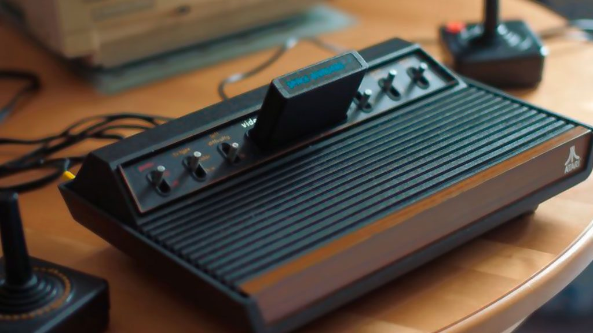

Atari 2600
Publié pour la première fois en 1977, c’est la troisième console fonctionnant avec des cartouches, ce qui fait d’elle une des premières consoles qui permet l’ajout de jeu au lieu de simplement jouer aux jeux préinstallés, elle est la console la plus populaire de sa génération et le plus grand succès de la société Atari, avant son déclin. Les développeurs du projet étant rendus anonymes par Atari, cela créa du mécontentement et un des employés inscrit son nom sur une pièce cachée du jeu d'aventure, créant le 1er easter egg du jeu vidéo.